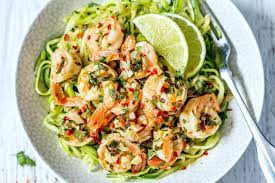

Lime Shrimp Pasta

Description
Shrimp and zucchini noodles make a perfect low-carb option when you’re looking for a quick, light dinner that’s packed with flavor.
Ingriedients
- 1 lb (450g) shrimp, shelled and deveined
- 2 + 1 tablespoons olive oil
- 4 cloves garlic, minced
- 1 pinch red pepper flakes (optional)
- 1/4 cup vegetable broth
- 1 teaspoon honey (optional for low-carb, keto diet.)
- Juice of 1 1/2 lime
- 3 medium zucchini, spiralized or cut into noodles
- Salt and fresh cracked pepper to taste
- 1 teaspoon lime zest
- 2 tablespoons cilantro, chopped